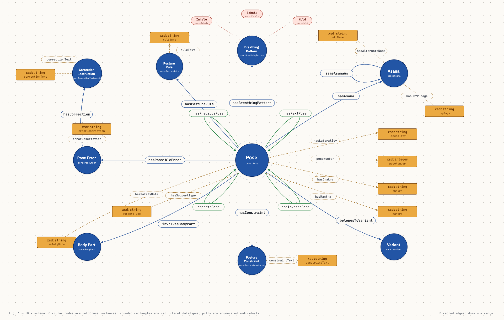
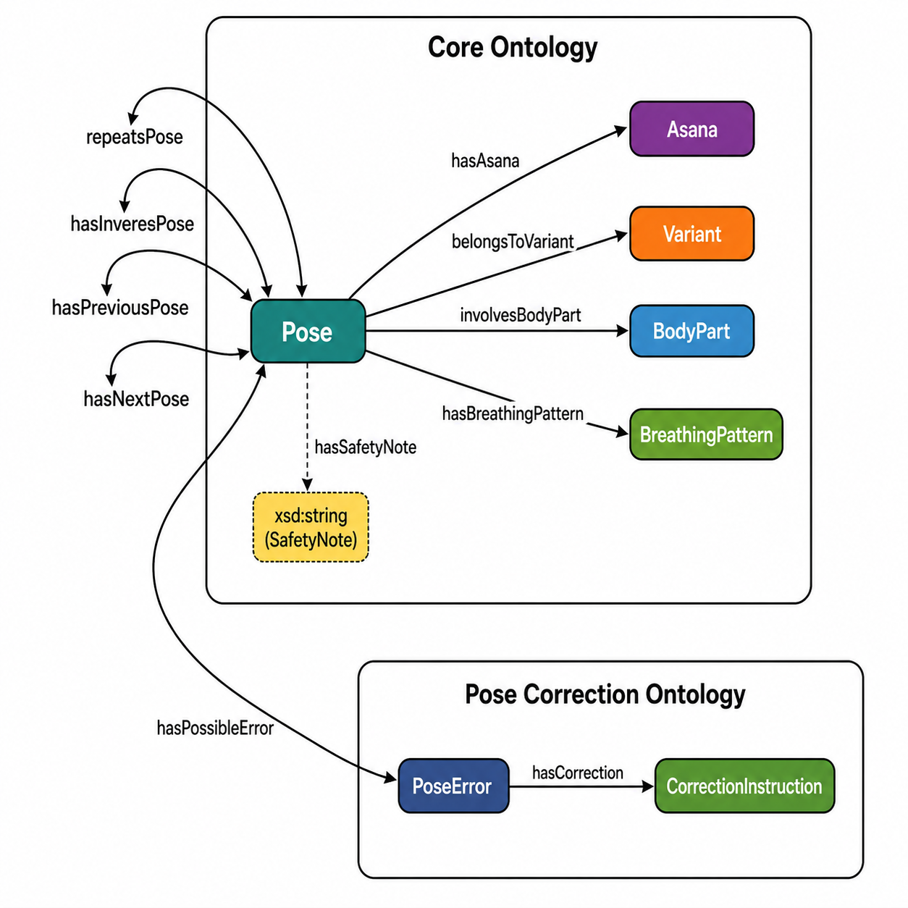

SN-YO: Surya Namaskar Yoga Ontology
Semantic Modeling | OWL | SPARQL
This ontology models Surya Namaskar as asanas, numbered pose occurrences, and sequence variants. It supports structured querying of sequence order, repeated poses, inverse relationships, support type, mantra, chakra, and shared asanas across variants.
The ontology also includes a pose correction layer for the Base Surya Namaskar followed at IIT BHU. This layer models body parts, posture rules, pose constraints, possible errors, and correction instructions.

Ontology Overview
Classes
Pose
Represents one numbered occurrence of an asana within a variant sequence.
Asana
Represents a yoga asana identity independent of sequence position.
Variant
Represents a Surya Namaskar tradition or sequence variant.
BodyPart
Represents a body part involved in a pose.
PostureRule
Represents an alignment or posture rule for a pose.
PoseConstraint
Represents a pose-specific constraint.
PoseError
Represents a possible error while performing a pose.
CorrectionInstruction
Represents a correction instruction linked to an error.
Object Properties
hasAsana
Links a pose occurrence to the asana performed.
belongsToVariant
Links a pose to its Surya Namaskar variant.
hasNextPose / hasPreviousPose
Links sequential poses to determine ordering.
repeatsPose / hasInversePose
Links identical or structurally opposite poses respectively.
sameAsanaAs
Links equivalent or normalized asana identities.
involvesBodyPart
Links a pose to the specific body parts involved.
hasRule / hasConstraint
Links poses to explicit technical & postural rules.
Datatype Properties
Attributes
poseNumber, hasMantra, hasChakra, hasSupportType, hasLaterality
Descriptions
ruleDescription, constraintDescription, errorDescription, correctionText
Project Files
pyLODE Documentation
Generated ontology documentation for classes, properties, and metadata.
View DocsOntology Metadata
Registered Namespaces
core:http://example.org/suryanamaskar/core#base:http://example.org/suryanamaskar/base-sn#v1:http://example.org/suryanamaskar/variant01#v2:http://example.org/suryanamaskar/variant02#v3:http://example.org/suryanamaskar/variant03#
Variants Represented
Use Cases
Compare Surya Namaskar variants across traditions.
Identify repeated poses and inverse pose relationships.
Retrieve the ordered sequence of poses in Base Surya Namaskar.
Query poses based on standing posture and specific support types.
Retrieve mantra and chakra metadata associated with Base SN poses.
Identify primary asanas shared across multiple variants.
Retrieve posture rules, constraints, common errors, and physical corrections.
Competency Questions & SPARQL Queries
Interactive exploration of Competency Questions and their corresponding SPARQL queries. Click to expand and view the evaluated results.
C1: What are the poses in Base Surya Namaskar?
PREFIX rdf: <http://www.w3.org/1999/02/22-rdf-syntax-ns#>
PREFIX rdfs: <http://www.w3.org/2000/01/rdf-schema#>
PREFIX core: <http://example.org/suryanamaskar/core#>
PREFIX base: <http://example.org/suryanamaskar/base-sn#>
PREFIX v1: <http://example.org/suryanamaskar/variant01#>
PREFIX v2: <http://example.org/suryanamaskar/variant02#>
PREFIX v3: <http://example.org/suryanamaskar/variant03#>
SELECT ?pose
WHERE {
?pose rdf:type core:Pose ;
core:belongsToVariant base:BaseSN .
}
ORDER BY ?poseExecution Result
| ?pose (base-sn namespace) |
|---|
| BaseSN_Pose01 |
| BaseSN_Pose02 |
| BaseSN_Pose03 |
| BaseSN_Pose04 |
| BaseSN_Pose05 |
| BaseSN_Pose06 |
| BaseSN_Pose07 |
| BaseSN_Pose08 |
| BaseSN_Pose09 |
| BaseSN_Pose10 |
| BaseSN_Pose11 |
| BaseSN_Pose12 |
C2: How many poses are in Base Surya Namaskar?
PREFIX rdf: <http://www.w3.org/1999/02/22-rdf-syntax-ns#>
PREFIX rdfs: <http://www.w3.org/2000/01/rdf-schema#>
PREFIX core: <http://example.org/suryanamaskar/core#>
PREFIX base: <http://example.org/suryanamaskar/base-sn#>
PREFIX v1: <http://example.org/suryanamaskar/variant01#>
PREFIX v2: <http://example.org/suryanamaskar/variant02#>
PREFIX v3: <http://example.org/suryanamaskar/variant03#>
SELECT (COUNT(?pose) AS ?count)
WHERE {
?pose rdf:type core:Pose ;
core:belongsToVariant base:BaseSN .
}Execution Result
| ?count |
|---|
| 12 |
C3: Which poses are performed standing on two feet in Base Surya Namaskar?
PREFIX rdf: <http://www.w3.org/1999/02/22-rdf-syntax-ns#>
PREFIX rdfs: <http://www.w3.org/2000/01/rdf-schema#>
PREFIX core: <http://example.org/suryanamaskar/core#>
PREFIX base: <http://example.org/suryanamaskar/base-sn#>
PREFIX v1: <http://example.org/suryanamaskar/variant01#>
PREFIX v2: <http://example.org/suryanamaskar/variant02#>
PREFIX v3: <http://example.org/suryanamaskar/variant03#>
SELECT ?pose
WHERE {
?pose rdf:type core:Pose ;
core:belongsToVariant base:BaseSN ;
core:hasSupportType "StandingTwoFeet" .
}Execution Result
| ?pose |
|---|
| BaseSN_Pose01 |
| BaseSN_Pose02 |
| BaseSN_Pose11 |
| BaseSN_Pose12 |
C4: Which poses are repeated in Base Surya Namaskar?
PREFIX rdf: <http://www.w3.org/1999/02/22-rdf-syntax-ns#>
PREFIX rdfs: <http://www.w3.org/2000/01/rdf-schema#>
PREFIX core: <http://example.org/suryanamaskar/core#>
PREFIX base: <http://example.org/suryanamaskar/base-sn#>
PREFIX v1: <http://example.org/suryanamaskar/variant01#>
PREFIX v2: <http://example.org/suryanamaskar/variant02#>
PREFIX v3: <http://example.org/suryanamaskar/variant03#>
SELECT ?pose ?repeatedPose
WHERE {
?pose core:repeatsPose ?repeatedPose .
}Execution Result
| ?pose | ?repeatedPose |
|---|---|
| BaseSN_Pose01 | BaseSN_Pose12 |
| BaseSN_Pose02 | BaseSN_Pose11 |
| BaseSN_Pose03 | BaseSN_Pose10 |
| BaseSN_Pose04 | BaseSN_Pose09 |
C5: Which poses have inverse relationships in Base Surya Namaskar?
PREFIX rdf: <http://www.w3.org/1999/02/22-rdf-syntax-ns#>
PREFIX rdfs: <http://www.w3.org/2000/01/rdf-schema#>
PREFIX core: <http://example.org/suryanamaskar/core#>
PREFIX base: <http://example.org/suryanamaskar/base-sn#>
PREFIX v1: <http://example.org/suryanamaskar/variant01#>
PREFIX v2: <http://example.org/suryanamaskar/variant02#>
PREFIX v3: <http://example.org/suryanamaskar/variant03#>
SELECT ?pose ?inversePose
WHERE {
?pose core:hasInversePose ?inversePose .
}Execution Result
| ?pose | ?inversePose |
|---|---|
| BaseSN_Pose04 | BaseSN_Pose09 |
| BaseSN_Pose09 | BaseSN_Pose04 |
C6: How many variants exist?
PREFIX rdf: <http://www.w3.org/1999/02/22-rdf-syntax-ns#>
PREFIX rdfs: <http://www.w3.org/2000/01/rdf-schema#>
PREFIX core: <http://example.org/suryanamaskar/core#>
PREFIX base: <http://example.org/suryanamaskar/base-sn#>
PREFIX v1: <http://example.org/suryanamaskar/variant01#>
PREFIX v2: <http://example.org/suryanamaskar/variant02#>
PREFIX v3: <http://example.org/suryanamaskar/variant03#>
SELECT (COUNT(?variant) AS ?count)
WHERE {
?variant rdf:type core:Variant .
}Execution Result
| ?count |
|---|
| 4 |
C7: What are the different variants represented in the ontology?
PREFIX rdf: <http://www.w3.org/1999/02/22-rdf-syntax-ns#>
PREFIX rdfs: <http://www.w3.org/2000/01/rdf-schema#>
PREFIX core: <http://example.org/suryanamaskar/core#>
PREFIX base: <http://example.org/suryanamaskar/base-sn#>
PREFIX v1: <http://example.org/suryanamaskar/variant01#>
PREFIX v2: <http://example.org/suryanamaskar/variant02#>
PREFIX v3: <http://example.org/suryanamaskar/variant03#>
SELECT ?variant
WHERE {
?variant rdf:type core:Variant .
}Execution Result
| ?variant |
|---|
| BaseSN_UsedatIITBHU |
| Variant01_KrishnamacharyaVinyasa |
| Variant02_BiharSchoolOfYoga |
| Variant03_SwamiVivekanandaKendra |
C8: Which asanas are shared across multiple variants?
PREFIX rdf: <http://www.w3.org/1999/02/22-rdf-syntax-ns#>
PREFIX rdfs: <http://www.w3.org/2000/01/rdf-schema#>
PREFIX core: <http://example.org/suryanamaskar/core#>
PREFIX base: <http://example.org/suryanamaskar/base-sn#>
PREFIX v1: <http://example.org/suryanamaskar/variant01#>
PREFIX v2: <http://example.org/suryanamaskar/variant02#>
PREFIX v3: <http://example.org/suryanamaskar/variant03#>
SELECT ?asana (COUNT(DISTINCT ?variant) AS ?varCount)
WHERE {
?pose core:hasAsana ?asana ;
core:belongsToVariant ?variant .
}
GROUP BY ?asana
HAVING (COUNT(DISTINCT ?variant) > 1)Execution Result
| ?asana | ?varCount |
|---|---|
| Pranamasana | 3 |
| HastaUtthanasana | 3 |
| Padahastasana | 3 |
| AshwaSanchalanasana | 3 |
| Bhujangasana | 3 |
| Parvatasana | 3 |
| ChaturangaDandasana | 2 |
| AshtangaNamaskara | 2 |
C9: What is the sequence order of poses in Base Surya Namaskar?
PREFIX rdf: <http://www.w3.org/1999/02/22-rdf-syntax-ns#>
PREFIX rdfs: <http://www.w3.org/2000/01/rdf-schema#>
PREFIX core: <http://example.org/suryanamaskar/core#>
PREFIX base: <http://example.org/suryanamaskar/base-sn#>
PREFIX v1: <http://example.org/suryanamaskar/variant01#>
PREFIX v2: <http://example.org/suryanamaskar/variant02#>
PREFIX v3: <http://example.org/suryanamaskar/variant03#>
SELECT ?pose ?nextPose
WHERE {
?pose core:hasNextPose ?nextPose .
}Execution Result
| ?pose | ?nextPose |
|---|---|
| BaseSN_Pose01 | BaseSN_Pose02 |
| BaseSN_Pose02 | BaseSN_Pose03 |
| BaseSN_Pose03 | BaseSN_Pose04 |
| BaseSN_Pose04 | BaseSN_Pose05 |
| BaseSN_Pose05 | BaseSN_Pose06 |
| BaseSN_Pose06 | BaseSN_Pose07 |
| BaseSN_Pose07 | BaseSN_Pose08 |
| BaseSN_Pose08 | BaseSN_Pose09 |
| BaseSN_Pose09 | BaseSN_Pose10 |
| BaseSN_Pose10 | BaseSN_Pose11 |
| BaseSN_Pose11 | BaseSN_Pose12 |
Visual Resources
Ontology Diagram
High-level mapping of the core ontology concepts and their relationships. Click to expand.

Interactive Visualization
Dynamic web-based visualization of the ontology mapping. Click the image to expand the high-resolution view.
Open WebVOWL Tool ↗Contributors
Surya Namaskar Ontology Research Team
Mansi Dodiya1, Kishan Kumar1, Bharath Muppasani2, Biplav Srivastava2, Raghava Mutharaju3, Hari Prabhat Gupta1
1 IIT (BHU), India | 2 University of South Carolina, USA | 3 IIT Palakkad, India
Acknowledgements
We thank Vivek Kumar, Abhishek Verma, Himanshu Sahu, Kush Pandey (Yoga Instructor), Priya Gautam (Project Coordination), for their help with the project.
The project was partially supported by Govt of India's Vaibhav Fellowship to Biplav Srivastava (visitor) and Hari P Gupta (host).
Reference 1. Kumar, V., Sahu, H., Gupta, H.P. and Srivastava, B., 2025. Technology-assisted Personalized Yoga for Better Health--Challenges and Outlook. arXiv:2508.18283 .
Reference 2. Ministry of Ayush, Government of India. Common Yoga Protocol (English) .